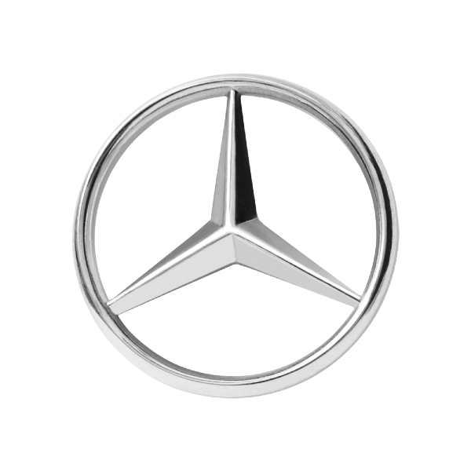
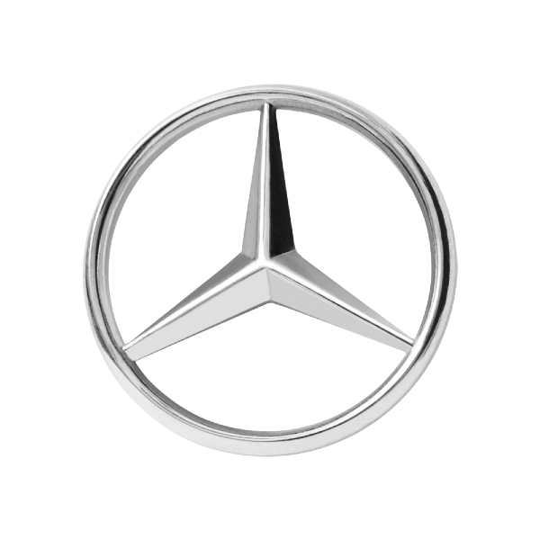

صنعت خودروسازی آلمان در اواخر 1920 و اوایل 1930 به علت رکود اقتصادی به عنوان یکی از صنایع جهانی فروپاشید که این یک روز غم انگیز برای تاریخ اتومبیل های آلمان بود.
در سال 1930، زمانی که حزب نازی به قدرت رسید، تغییرات مهمی در صنعت خودرو آلمان رخ داد. از سیاست های آن دوره میتوان به سیاست بالا بردن استاندارد های زندگی شهروندان، کار در طرح های ساخت بزرگراه ها، و ساخت کارخانه ی فولکس واگن که برای طراحی خودروهای ارزان برای مردم بود اشاره کرد.
امروزه شرکت های بزرگی از جمله آئودی، بی ام دبلیو، مرسدس بنز و پورشه در این کشور وجود دارند که هرکدام تاریخچه ی خاص خود را داشته که در ادامه به آن می پردازیم.
امروز صنعت خودروسازی در آلمان نزدیک به 6 میلیون تولید دارد که 31.5 درصد از سهم تولید کل اتحادیه اروپا را تشکیل می دهد.
صنعت خودروسازی در آلمان یکی از بزرگترین کارآفرینان در جهان است و بطوریکه در سال ۲۰۱۶ نیروی کاری بیش از ۸۵۷،۳۳۶ در این صنعت مشغول به کار بودند. با سایت اجاره خودرو یوروپکار همراه باشید.
صنعت خودرو آلمان بهعنوان قطب تولید خودروهای مدرن و همچنین بالاترین میزان تولید خودرو در جهان موجب به وجود آوردن فضای رقابتی و نوآورانه در این صنعت شده است. صنعت خودروسازی آلمان چهارمین تولیدکننده خودرو در جهان است. این صنعت با تولید سالانه نزدیک به ۶ میلیون و سهم ۳۱.۵ درصد از اتحادیه اروپا در سال ۲۰۱۷ کمک شایانی به اقتصاد این کشور نموده است.
 
